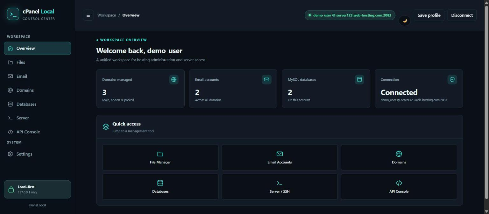
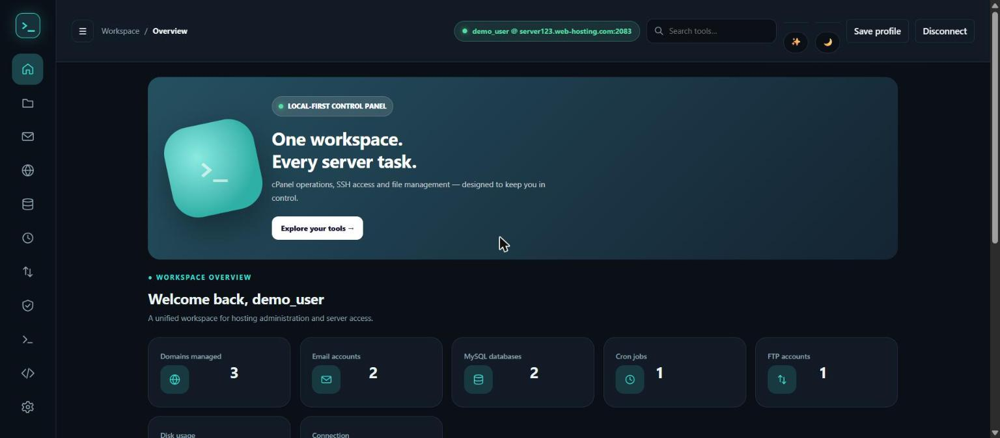
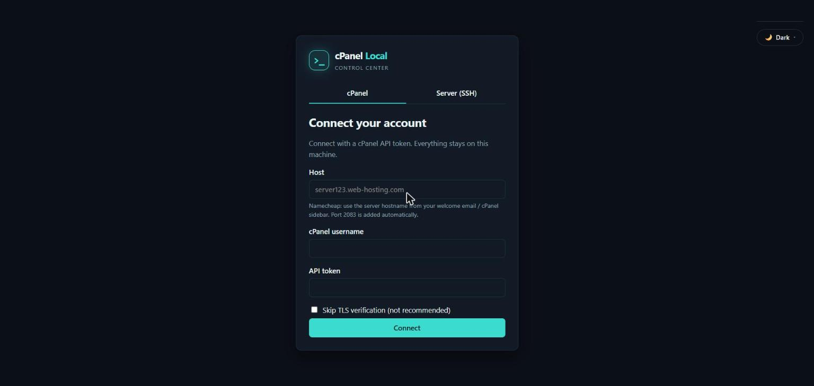
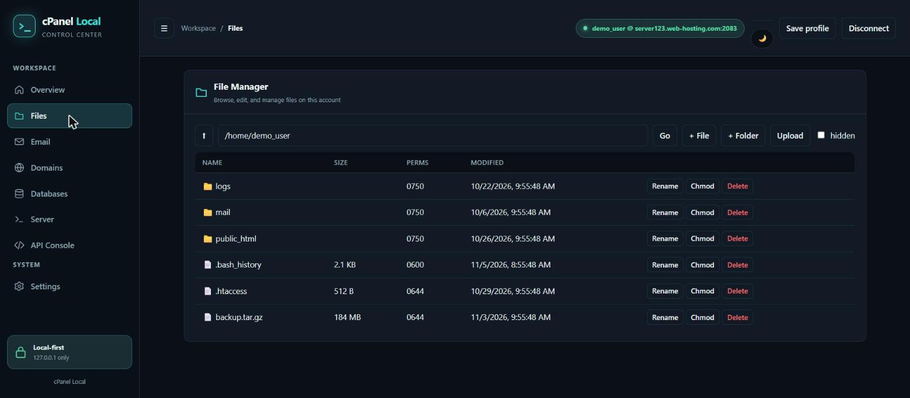
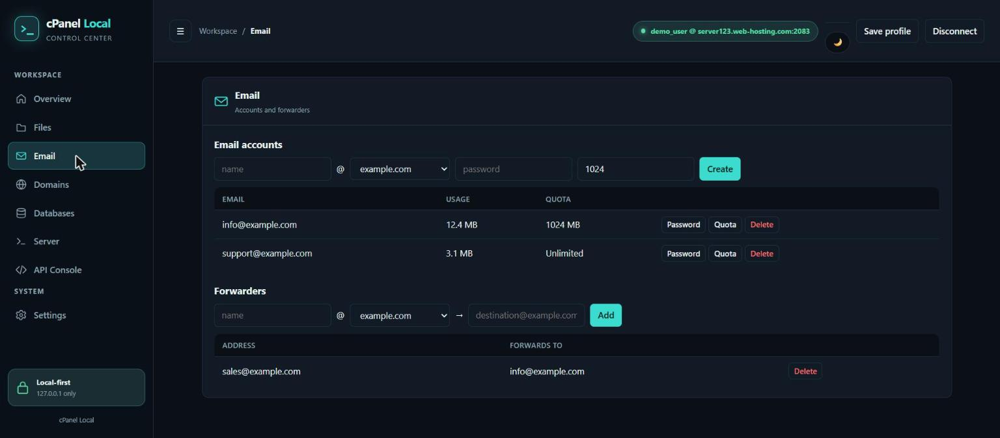
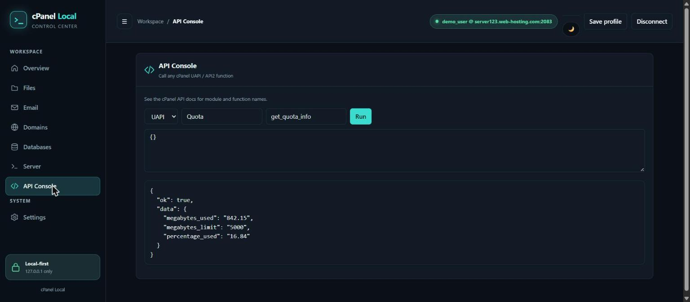

A control panel for
cPanel & SSH, on your machine
Files, email, domains, databases, cron, FTP, SSL and a full SSH terminal — in one small app that only talks to 127.0.0.1. No account to create, nothing phones home.
Two layouts, your choice
Plus Light, Dark, and Midnight themes — switch anytime from the top bar.






Everything you reach for often
Built for the handful of admin tasks that make cPanel's own UI feel slow.
Files
Browse, edit, create, upload, rename, chmod, delete (to trash).
Accounts, forwarders, autoresponders, and filters.
Domains
Subdomains, addon domains, aliases, per-domain PHP version.
Databases
MySQL databases and users, privileges, password resets.
Cron jobs
Create and remove scheduled tasks with standard crontab syntax.
FTP accounts
Create and manage FTP accounts, passwords, and quotas.
SSL certificates
Read-only view of installed certs, issuer, and expiry status.
SSH & SFTP
A real terminal plus file browser for any server — no cPanel account needed.
API Console
Call any UAPI or API2 function directly, for anything the UI doesn't cover.
Download
Standalone executables — Node.js is bundled in, nothing else to install.
Loading the latest release…
Couldn't load the latest release automatically — grab it directly from the Releases page.
macOS binaries aren't code-signed — a one-time xattr + codesign step is needed (see the README). Prefer to run from source? Quick start →